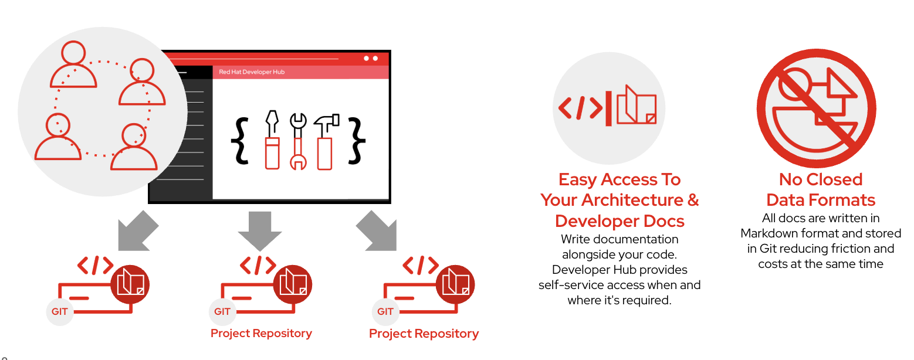

Documentation as Code with TechDocs
As software systems grow in complexity, keeping documentation accurate becomes just as important as maintaining the application itself. However, documentation is often stored separately from the source code—in shared drives, wikis, or knowledge bases—which can quickly become outdated as applications evolve.
To solve this problem, many organizations adopt the concept of Documentation as Code.
Documentation as Code treats documentation like application source code. Instead of maintaining documentation in external systems, it is written alongside the application’s source code, version-controlled in Git, and updated using the same development workflow.

The illustration above shows how every project maintains its own documentation within its source repository. Red Hat Developer Hub automatically discovers this documentation and presents it through a centralized portal, allowing developers to easily search and access architecture guides, API documentation, deployment instructions, and operational runbooks.
Why Documentation as Code?
Keeping documentation close to the source code provides several advantages.
When developers update application code, they can update the documentation as part of the same change. Since both code and documentation follow the same Git workflow, every change is reviewed, version-controlled, and synchronized with the application’s lifecycle.
This approach significantly reduces the likelihood of outdated or inconsistent documentation.
TechDocs in Red Hat Developer Hub
Red Hat Developer Hub includes TechDocs, a documentation platform built around the Documentation as Code principle.
Instead of storing documentation in a separate knowledge base, TechDocs automatically renders documentation directly from the application’s Git repository.
Documentation is typically written using Markdown and organized alongside the application source code, making it easy for development teams to maintain and improve documentation throughout the software lifecycle.
Centralized Documentation Experience
Although documentation remains distributed across individual repositories, Developer Hub provides a centralized experience for consuming it.
Developers can quickly discover documentation for applications, APIs, libraries, and platform components without needing to search across multiple repositories.
Typical documentation includes:
-
Application architecture
-
API documentation
-
Deployment guides
-
Development setup instructions
-
Operational runbooks
-
Troubleshooting guides
-
Architecture Decision Records (ADRs)
This enables every software component in the Software Catalog to have its own version-controlled documentation that is immediately available through Developer Hub.
Open Standards
TechDocs uses open and widely adopted technologies.
Documentation is typically:
-
Written in Markdown.
-
Stored alongside application source code in Git.
-
Version-controlled with the application.
-
Reviewed through the same pull request workflow as application code.
Because documentation is stored in open formats, organizations are not locked into proprietary documentation platforms or closed file formats.
Benefits of Documentation as Code
For developers:
-
Access project documentation directly from Developer Hub.
-
Keep documentation synchronized with application code.
-
Collaborate using familiar Git workflows.
-
Search documentation across multiple projects from a single portal.
For Platform Engineers:
-
Encourage consistent documentation standards.
-
Reduce outdated documentation.
-
Improve knowledge sharing across teams.
-
Eliminate dependence on proprietary documentation systems.
|
Think of TechDocs as the documentation layer of the Software Factory. Just as the Software Catalog helps developers discover software components, TechDocs helps them discover the knowledge required to build, operate, and maintain those components. |
Key Takeaway
TechDocs extends Red Hat Developer Hub with Documentation as Code capabilities. By storing documentation alongside application source code and rendering it centrally through Developer Hub, organizations ensure that documentation remains accurate, searchable, version-controlled, and available throughout the software development lifecycle.